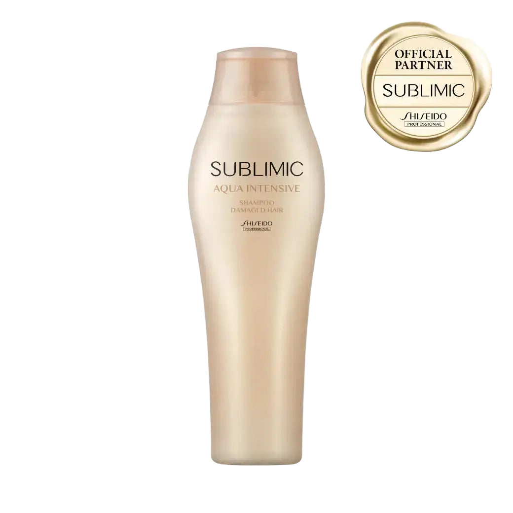
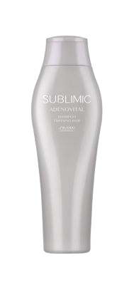
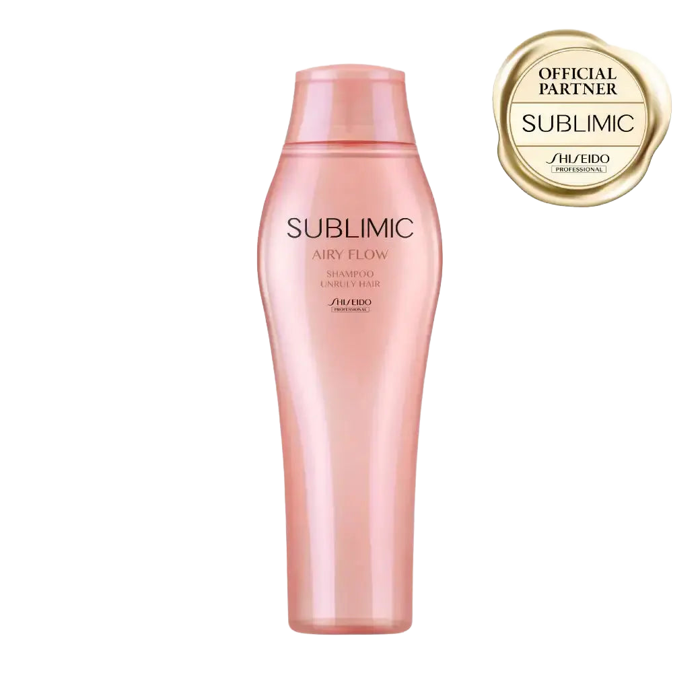

Buy Only ・ Walk-in Welcome
資生堂プロフェッショナル
宇都宮で"買うだけ"OK
施術もご予約もいりません
gigi SEAMは 資生堂プロフェッショナルをメーカー公認の正規ルートで取り扱うヘアケアショップ
お買い物だけのご来店を歓迎しています
店舗のご案内
宇都宮での立ち寄り方
SEAMの宇都宮店は 市内・鶴田エリアにあります。ロードサイドで駐車もしやすく お車での立ち寄りに向いた立地です。
JR鶴田駅からは徒歩6分。日々の買い物やお出かけの動線に組み込みやすい場所です。
シャンプー・トリートメントの買い足しから 大容量サイズまで。施術なしで サロン専売ヘアケアだけを"買うだけ"で選べます。
この店舗で出会える 資生堂プロフェッショナル
取扱アイテムと ひとこと詳細

アクアインテンシブ シャンプー
250mL ・ 定価 ¥3,080 税込
タンパク質・水分・脂質を同時に補うダブルリペアの泡。ガーデニアとピオニーの香りで、補修の夜が華やぐ。

アデノバイタル シャンプー
250mL ・ 定価 ¥3,520 税込
資生堂のアデノシン研究をルーツに持つ土台ケアの泡。根元の立ち上がりから、明日の印象を設計する。

エアリーフロー シャンプー
250mL ・ 定価 ¥3,080 税込
くせ・広がりを軽さで制するヘアシェイプケア。ふわっと流れるのにまとまる、が両立する。
価格・仕様は変わる場合があります このほかの資生堂プロフェッショナルも店頭に揃っています
買い方は 2とおり
In Store
gigi SEAMの店頭で選ぶ →
どなたでも購入OK ・ 予約不要 ・ 資生堂プロフェッショナルを実際に手に取れます
Members Only
会員制オンラインショップ →
サロン専売品を会員価格で ・ ご登録は店頭のみ
販売のみ・ネットショップでのご購入について
資生堂プロフェッショナルは美容室専売品（サロン専売品）です SEAMは正規取扱店として販売のみのご来店を歓迎しています 施術も予約も要りません
店頭でご登録いただくと 買い足しは会員制のネットショップから通販でご注文いただけます
よくある質問
- 宇都宮で資生堂プロフェッショナルを買うだけの来店はできますか
- はい gigi SEAMでは施術やご予約がなくても 資生堂プロフェッショナルをお買い求めいただけます お買い物だけのご来店を歓迎しています
- 宇都宮店へのアクセスは
- 鶴田駅から徒歩6分（お車での来店もしやすい立地）です
- 予約は必要ですか
- 不要です 鶴田駅から徒歩6分（お車での来店もしやすい立地） 営業時間内にそのままお越しください
- 会員でなくても買えますか
- 店頭はどなたでもご購入いただけます 会員制はオンラインショップのみで ご登録は店頭でご案内しています
- 資生堂プロフェッショナルの在庫はありますか
- 在庫は時期により変わります 確実にお求めの場合は gigi SEAMのInstagramや店頭でご確認ください